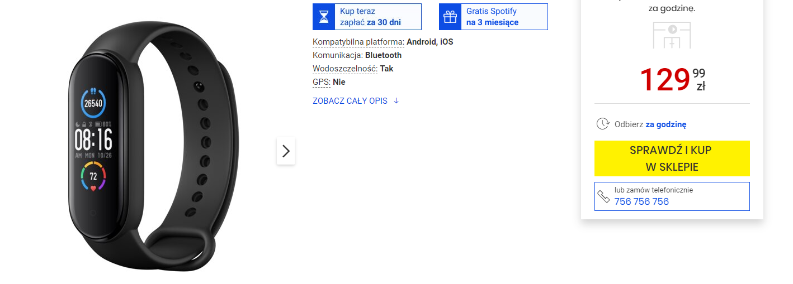
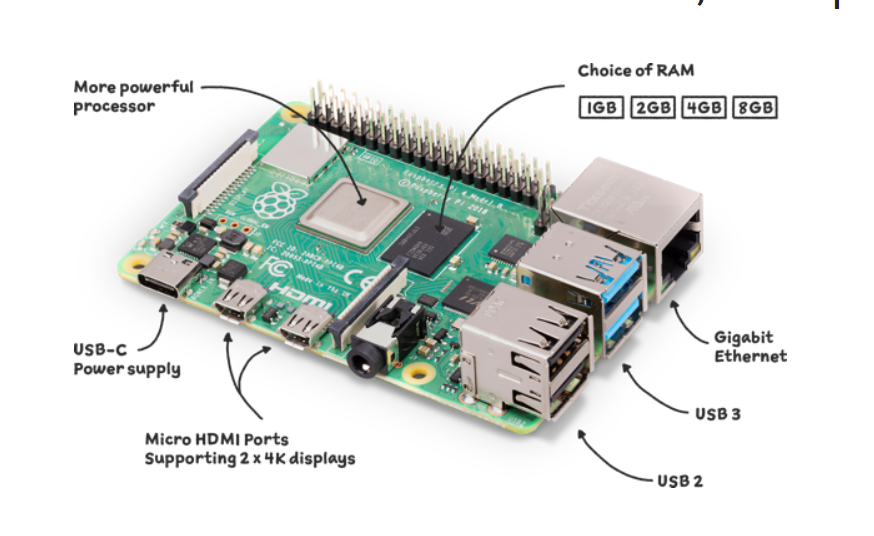
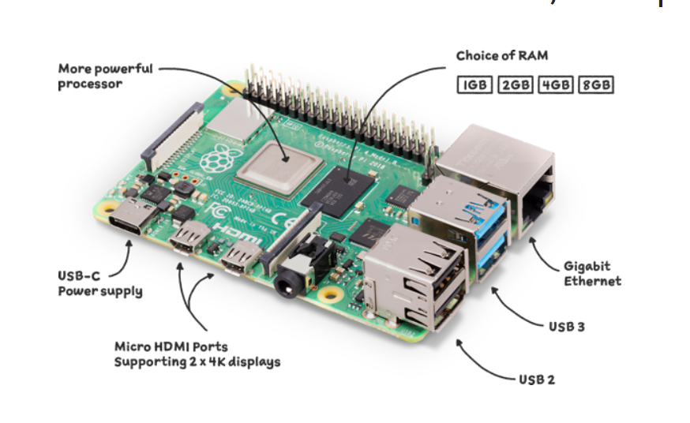
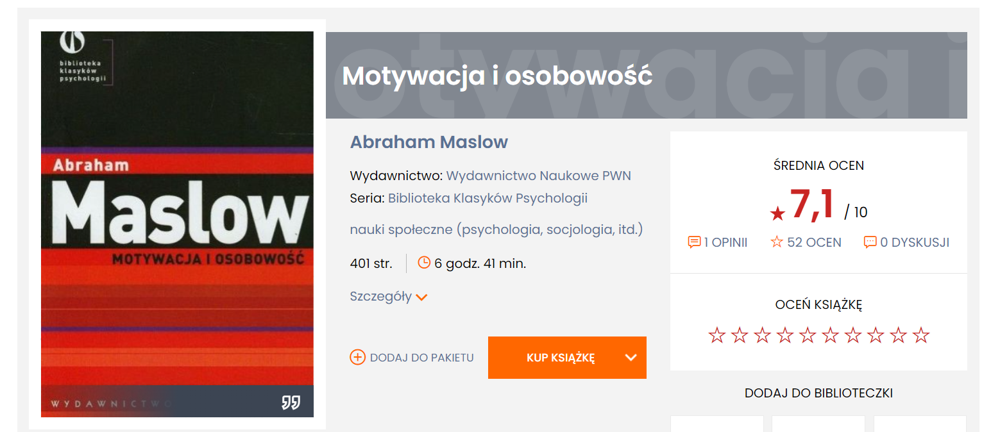

Droga Gwiazdko
Prosił bym cię jeśli byś mogła abyś na te święta przyniąsła mi coś z tych rzeczy. Jak będzie jedna to będzie git.

Sam zegarek nie jest drogi bo jego cena wacha się od 130 do 150 złotych.
link : Link do strony
Sam zegarek nie jest drogi bo jego cena wacha się od 130 do 150 złotych.
link : Link do strony
Drugi na liście jest rasbery pi 4 B jest mały mikro komputer który ma wbudowane porty takie jak mikro hdmi czy mikro usb odpowiedzialne za zasilanie. Ma też dużo portów USB widocznych. Sam komputer kosztuje swoje, więc nie oczekuję na nic.
link : Model ze strony
link : Model ze skelpu sieciowego

link : Model ze strony
link : Model ze skelpu sieciowego

Trzecia jest książka Abrahama Maslowa. Sama książka uraczyła mnie tematem i ocenami w internecie.
link : Link do Empika

Czwarty przedmiot to torba najlepiej czarna, taka szkolna. Wiem że mam już jedną jednak tą co mam uważam za ładną do brania do szkoły.